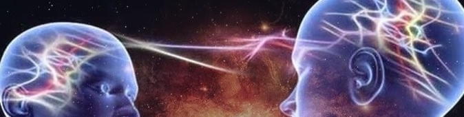

Powers in seeing others to attract higher vibrations
“I see you. I truly see you.”
Even when you are not here, I see your energy. I know and understand it. Because of that, I can notice myself. How?
Please reverse the sentence “I see you”, and you will get “You see I”. Yourself. Only then will I see myself.
If we are one Collective, one Consciousness having many experiences in this fragmented experiment called life. Then when you make another person look at themself with love, you will express it to yourself.
I look at it as a spell. We are enchanted by programming to seek external validation. We want others to accept and praise us, not knowing that the spellbreaker is hidden in us. You have to find love for yourself within you to the point that it will be fully satisfying.
 Could you imagine the strength and confidence you can possess when you stop requiring it from others and find it within yourself? You would become untouchable, unstoppable, protected. Not by angels or guides or God. Oh no. They would not have to do it anymore. They are not meant to. It is about your energy, vibration, aura, or power.
Could you imagine the strength and confidence you can possess when you stop requiring it from others and find it within yourself? You would become untouchable, unstoppable, protected. Not by angels or guides or God. Oh no. They would not have to do it anymore. They are not meant to. It is about your energy, vibration, aura, or power.
But if you have a problem finding it, there is an easier path to turn it on. Seeing first others, and because we are one this way, you will acknowledge yourself automatically.
Love
It is an emotion or feeling with a frequency of 528Hz. Everybody craves to experience it. The majority of people associate it with an external feeling for another person. Romantic love, parental love, friendship love. But it is just affection as its source is external.Love, as an emotion with a greater frequency, which can uplift us and change our lives, is the one which holds power in itself. It does not depend on others' choices or mercy. It is the one always present, stable and loyal. The one, when found will stay with forever you. The one that sees you fully and truly and can not stop watching you.
In its purest form - YOU.
“I am not bound to win, but I am bound to be true.
I am not bound to succeed, but I am bound to live up to what light I have.”
~Abraham Lincoln
I am not bound to succeed, but I am bound to live up to what light I have.”
The closest things are most difficult to notice. What can be more devoted to you if not you yourself? You need to just fall in love with yourself. One of the most difficult tasks we have to accomplish in one of our lifetimes.
And there is a way to make it easier. Using the power of the “I see you” concept. When you start noticing, praising, and adoring others, you help them to reverse the sentence and let them see “I”. Themselves.
I promise you will feel it is a task accomplished. It is as if making somebody love themself makes your mind not resist it for itself anymore. We are just One.
Confidence
One of the most the desired qualities and the one which sells itself. Confident people seem to have it all, become magnetic and can influence environments and others. It comes with responsibility and high frequency. It makes people feel amazing and untouchable.But confidence is not only a feeling of self-assurance arising from appreciation of your abilities. It is also a belief that you can have faith in or rely on someone else.
Is it a coincidence that these two things were given the same name? I do not believe in coincidences. I see them as synchronicities. We were meant to see both as related. It means that having faith in others will generate desired confidence in you.
Are you asking how to do it? “I see you”.
 Faith in others is simply seeing them and trusting that what they do is exactly what they need right now. Whatever they do, think, and talk about is right. You trust them. You see and understand. You love them,
Faith in others is simply seeing them and trusting that what they do is exactly what they need right now. Whatever they do, think, and talk about is right. You trust them. You see and understand. You love them,
Tell me how you would not feel confident surrendered by people you love and trust. Sounds like a trick? Give it a go and raise.
Resonance
Resonance is a phenomenon which occurs with all types of vibrations and waves: mechanical, acoustic, and electromagnetic. Even electrons have spin resonance.Resonant systems can be used to generate vibrations of a specific frequency. Small periodic forces that are near a resonant frequency of the system have the ability to produce larger amplitude oscillations.
 And it is so relevant to us - people. We generate vibrations at a particular frequency. You can heighten it to an unbelievable, world-changing level by putting yourself in a higher vibrating and consistent environment because we influence each other.
This external force will tend your system to reverberate in a higher amplitude other than its natural amplitude along its preferred frequency.
And it is so relevant to us - people. We generate vibrations at a particular frequency. You can heighten it to an unbelievable, world-changing level by putting yourself in a higher vibrating and consistent environment because we influence each other.
This external force will tend your system to reverberate in a higher amplitude other than its natural amplitude along its preferred frequency.
Make your World. Make people around you respond in similar frequency to amplify the change opportunity. How?
Start with seeing them. Apply the “I see you” formula. People crave being seen. They will align with your energy. Remember to be patient. When you seek people to increase frequencies, the Universe will deliver.
At the end of the day, everybody is you.